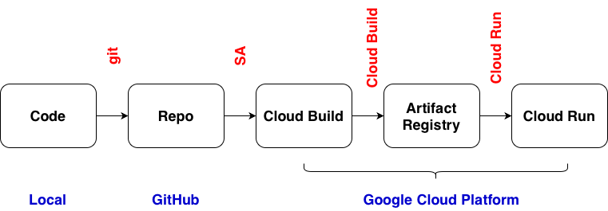

# Access Developer Connect, https://console.cloud.google.com/developer-connect
# Git repositories -> Connections -> Create connection -> GitHub
# Set location and name, click Connect
# Connect a GitHub account and select repositories
# Click Link to link the selected repository
# Access IAM & Admin -> Service Accounts
# identify the service account which is PROJECT_ID-compute@developer.gserviceaccount.com
# Add the role of Developer Donnect Token Accessor
# Deploy container -> Continuously deploy from a repository > Developer Connect
# Click Set up with Developer Connect
# Select repository and branch, click Save
# Create deployment